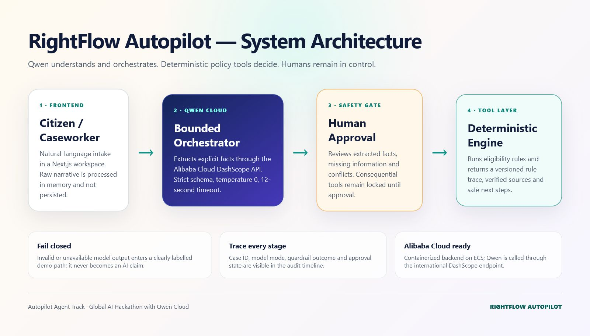
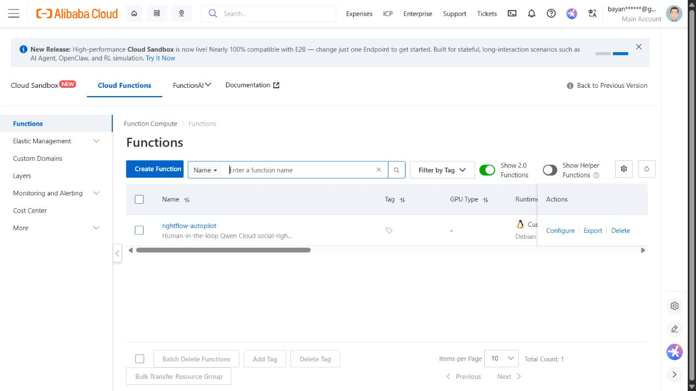

People do not arrive at a public-service desk speaking in database fields. They say, “My mother lives with us, her health is getting worse, and I do not know what support we can ask for.” The system on the other side asks for age, household size, income, disability documentation, insurance status, and dozens of other facts.
That gap between a human story and an administrative process is where applications are abandoned and caseworkers lose time. It also looked like exactly the kind of ambiguous, real-world workflow the Autopilot Agent track was asking us to tackle.
I started RightFlow Autopilot with one constraint: the language model could help understand the story, but it would not be allowed to make the legal or eligibility decision. That constraint shaped every part of the product.
AI understands the narrative. Humans verify the facts. Rules decide what happens next.
The problem was not “add a chatbot”
Social-rights guidance is a high-consequence domain. A fluent answer can still be incomplete, outdated, or confidently wrong. A conventional chatbot would make the interface feel easier while leaving the hardest questions unresolved: Which facts came from the citizen? Which were inferred? What rule produced the recommendation? Who approved the action?
I wanted the system to show its work. A caseworker or citizen should be able to follow the path from the original narrative to extracted facts, through a human checkpoint, into a bounded screening result. If a required fact is missing, the honest output is a question—not a guess.
Designing the workflow around trust
The resulting pipeline has five deliberate stages:
- Natural-language intake. The user describes the situation in their own words.
- Qwen extraction. Qwen 3.7 Plus converts only explicitly stated details into a strict fact schema.
- Validation and safety checks. The backend normalizes values, rejects fields outside the allowlist, detects prompt-injection patterns, and fails closed when output cannot be trusted.
- Human review. A visible checkpoint requires a person to confirm the structured facts before screening continues.
- Deterministic screening. Versioned rules identify relevant review pathways, missing evidence, and safe next steps. Every stage is recorded in an audit timeline.

This separation is more than an architecture diagram. It is a product promise. The model is excellent at interpreting varied language, while code is better at repeatable comparisons and auditability. RightFlow uses each where it is strongest.
A concrete case
In the demo, the citizen explains that her 68-year-old mother lives in a household of three, the household has a monthly income of 28,500 Turkish lira, and a disability report exists. Qwen turns that paragraph into four reviewable facts: age, household size, income, and whether a disability report was mentioned.
The interface does not immediately announce that the person “qualifies.” It asks a human to verify the extraction. Once approved, deterministic tools screen possible pathways such as older-person support, home-care support, and a GSS review. GSS means Genel Sağlık Sigortası, Turkey’s General Health Insurance system. The result explains which conditions appear relevant, what information is still missing, and which official channel should be consulted.
What Qwen Cloud changed
The first version of the broader SocialRightOS frontend already explored access to social-rights information. During the hackathon, I rebuilt the critical intake flow as a standalone agent around Qwen Cloud. The new work included structured Qwen extraction, a dedicated orchestration API, human approval, deterministic screening tools, an audit timeline, adversarial-input boundaries, automated tests, and a new interface focused on a single end-to-end job.
Qwen’s role is intentionally narrow but essential. Real users may express the same fact in many ways, mix important details with emotion, or omit the terminology used by official forms. Qwen provides the flexible language layer that maps these narratives into a predictable schema. The backend then verifies that schema before anything consequential can happen.
The difficult engineering decisions
1. Resisting invisible inference
The tempting approach was to let the model “complete” a case from context. That would make more fields look filled, but it would weaken trust. I changed the prompt and validation contract so that unknown values remain unknown. Confidence is displayed for review, and the raw narrative is not persisted by the workflow.
2. Making fallback behavior honest
Cloud APIs can time out or return malformed output. RightFlow has a bounded timeout and a deterministic demo fallback, but the fallback is labelled. The UI never presents locally generated sample extraction as a live Qwen result. This small detail matters: graceful degradation should preserve truth, not only uptime.
3. Deploying without turning cost into a hidden risk
I deployed the standalone Next.js application to Alibaba Cloud Function Compute in the Singapore region. The public HTTP trigger gives judges a no-login test path, while the DashScope credential remains a server-side environment variable. Function Compute also matched the project’s usage pattern: short, event-driven requests rather than an always-on virtual machine.

The deployment is reproducible from the public repository. The Function Compute manifest defines the custom runtime, memory and CPU limits, public HTTP trigger, and server-side secret binding. This makes the cloud proof inspectable instead of relying on a screenshot alone.
What I learned
The most important lesson was that “agentic” does not have to mean unrestricted. A useful production agent can be autonomous about coordination—understanding input, selecting bounded tools, assembling an audit trail—while still stopping at the exact moment human judgment is required.
I also learned that explainability has to be designed into the data flow. It cannot be added at the end as a paragraph generated by the same model. RightFlow’s explanation comes from visible facts, named rule checks, missing fields, and timestamped stages. That makes it possible to test and improve each layer independently.
Finally, the deployment work reinforced a practical point: cost-efficiency is part of production readiness. A public-interest prototype is more credible when another team can reproduce it, understand its cloud footprint, and operate it without committing to unnecessary infrastructure.
Where this could have an impact
RightFlow’s immediate value is reducing the translation burden between citizens and social-service workflows. A better intake can help a caseworker start with cleaner facts, help a citizen understand what evidence to gather, and make handoffs easier to audit.
The larger pattern is reusable. The same architecture can support other domains where language is ambiguous but decisions must remain controlled: insurance intake, municipal permits, nonprofit referrals, compliance triage, and healthcare administration. The schemas and deterministic tools change; the trust boundary remains.
There is still serious work ahead. Program rules need jurisdiction-specific versioning and review by domain experts. Accessibility testing must include older users and people with disabilities. A production deployment would need formal privacy assessment, monitoring, multilingual evaluation, and institutional governance. I see those not as footnotes, but as the roadmap.
Try it and inspect it
The live demo is available without credentials. The complete implementation, tests, safety boundaries, and Alibaba Cloud deployment manifest are in the open-source repository.
RightFlow began with a simple observation: asking for help should not require knowing the language of the system in advance. Qwen Cloud helped bridge that language gap. The rest of the engineering work was about making sure the bridge has guardrails.